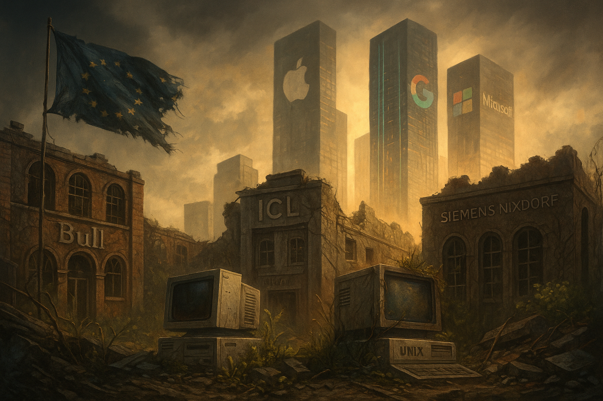

Publicado em 2025-05-14 09:47:00
Nos anos 1980 e 90, a Europa ainda tinha voz na tecnologia global. Fabricava computadores. Desenvolvia sistemas operativos. Produzia inovação, e não apenas regulação. Países como França, Alemanha, Reino Unido, Itália e até Portugal tinham empresas no setor dos mainframes, workstations, sistemas Unix, CADs, computação gráfica, e telecomunicações digitais.
Havia promessas. Havia ambição. Havia futuro.
Hoje, esse futuro morreu. E a Europa tecnológica é um deserto.
A lista é longa e embaraçosa:
Mesmo iniciativas pan-europeias como o X/Open, o SCO Unix europeu, ou a colaboração para chips SPARC, nunca foram além do protótipo ou do nicho. E quando a revolução da Internet chegou, os EUA tomaram tudo — com o Google, a Apple, a Microsoft, a Amazon, o Facebook e agora a OpenAI.
A Europa? Ficou com regulamentos, estudos de impacto, “roadmaps tecnológicos”… e pouca coisa para mostrar ao mundo.
A Europa ainda lidera em robótica industrial (Alemanha), engenharia aeronáutica (Airbus), e alguns nichos científicos. Mas não há um único produto de consumo de referência mundial em software ou inteligência artificial criado na Europa nas últimas duas décadas.
Nem um.
O futuro da Europa dependerá da sua capacidade de reaprender a errar, a arriscar, a construir.
De deixar de ser apenas cliente do mundo digital e voltar a ser arquiteta de soluções.
Mas para isso, é preciso coragem.
E essa, infelizmente, é mais rara que fundos comunitários.
Por Francisco Gonçalves in Fragmentos de Caos